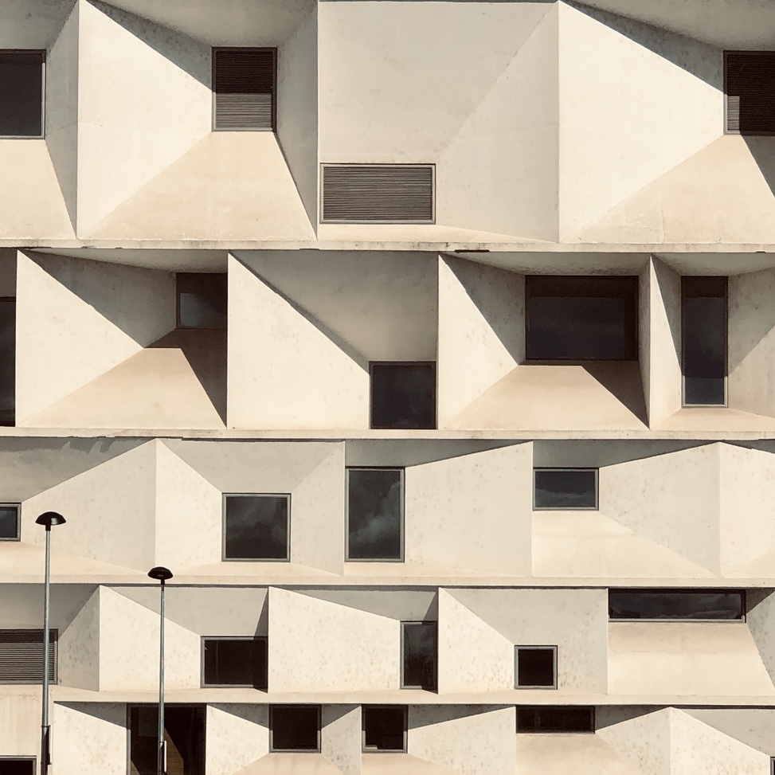

Photography
See the Light
Bold colors meet abstract forms that reimagines architecture — blurring space and dimension into graphic-inspired art.

Bold colors meet abstract forms that reimagines architecture — blurring space and dimension into graphic-inspired art.
Lines of code weave intention and interaction — dissolving the boundaries between data and design into living digital experiences.